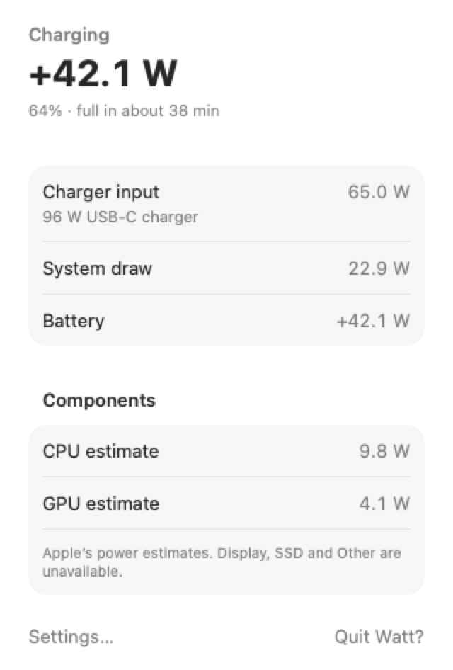

Four ordinary reasons a Mac charges slowly, and what the watts in Watt? are telling you.
A Mac charges slowly because the adapter or the cable is delivering fewer watts than the model can use, because the Mac is spending those watts on itself, because macOS is holding the charge on purpose, or because the machine is too hot. Watt? does not change any of that. It shows the first two as charger watts, system watts, and battery watts, and it shows macOS’s own estimate of time to full.
Watt? needs macOS 13 or later, and it can show these watts only when that Mac’s battery exposes them. The practical rules are the same on the Intel USB-C MacBooks and on Apple silicon. What changes is the adapter Apple lists for the model. A desktop has no battery to charge.
Which charger is enough
Apple’s rule, on Use a power adapter with your Mac: if the Mac charges over USB-C, any USB-C power adapter or display that supports USB Power Delivery can charge it, including one with higher or lower wattage than the adapter Apple recommends. For the best charging experience they want at least the minimum wattage recommended for that Mac. A lower-wattage adapter still charges. It charges more slowly, and under a heavy load it may only run the Mac.
That page groups the recommended adapters as follows. Use it for your model, including any model Apple has added since this was written.
- MacBook Air, 2018 through 2021: a 30 W USB-C adapter, or the 40 W Dynamic Power Adapter with a 60 W max.
- MacBook Air, 2022 or later: 30 W (13-inch only), 35 W dual USB-C, 67 W, or 70 W. Apple also lists the 40 W Dynamic Power Adapter for these models when it is used with a USB-C charge cable.
- 13-inch MacBook Pro, 2016 or later: 61 W. Apple lists the Intel models and the later 13-inch Apple silicon models in this one group.
- 15-inch MacBook Pro, 2016 or later: 87 W. These are Intel machines.
- 16-inch MacBook Pro, 2019: 96 W. Intel.
- 14-inch MacBook Pro, 2021 or later: 67 W, 70 W, or 96 W. Apple silicon.
- 16-inch MacBook Pro, 2021 or later: 140 W. Apple silicon.
The same page lists MacBook Neo with a 20 W adapter. Enough, for the Air and the Pro, means a charging solution at or above the minimum Apple lists for that model. A higher wattage than that recommendation is fine: Apple says a USB-C Power Delivery adapter above or below it can still charge the Mac. A lower one has less headroom once the Mac is awake and working.
On macOS Tahoe 26.4 or later, Apple shows “Slow Charger” in the battery status menu and in Battery settings when the charging solution is below that minimum. Their charging page says the adapter and the cable should deliver at least the recommended wattage. Charge your Mac laptop computer is that page. Some models can also fast charge, and only with the adapter and cable combination Apple documents there. Meeting the minimum charges the Mac. It is not, by itself, the fast-charge combination.
A second plug does not help. Whether the ports are MagSafe or USB-C, the Mac charges from one of them: the source that provides the most power. Connecting another charger does not add the two ratings.
Older MagSafe and MagSafe 2 adapters are a different connector. Apple says MagSafe 3 is not compatible with the adapters and cables those earlier ports used.
The cable, and the watts that were negotiated
The number printed on the adapter is a ceiling. USB-C Power Delivery is a contract between the charger and the Mac, and the cable is part of what that contract can be. A passive USB-C cable is specified for up to 3 A, which is 60 W at 20 V. Current above 3 A needs an electronically marked cable. USB-IF now certifies USB-C to USB-C cables at 60 W or 240 W. A data-only cable, or a cable rated below the adapter, negotiates less than the number on the brick.
The 3 A / 60 W baseline is the one described in Microchip’s introduction to USB Power Delivery. The 60 W and 240 W certification marks are from USB-IF’s cable update. Cables certified before that change can still be in use, so a drawer can contain a cable that is neither 60 W nor 240 W.
Apple’s practical version, from If your Mac battery won’t charge: not every cable can charge, so use one designed for charging, and for best results the cable that came with the Mac.
You can see the gap in Watt?. Open the panel and read Charger input. The large number is the watts coming in now. When the Mac reports an adapter, a second line names it and its rated wattage, such as “96 W USB-C charger”. The rated figure is the adapter details the Mac publishes. The input figure is measured power. When a 96 W adapter is only delivering some lower number, the cable, the port, or the negotiated contract is below the rating.
Hold Option and choose Apple menu, System Information, Power, then AC Charger Information, for Apple’s own look at the connected adapter. Watt? is the live split of that question: watts in, watts the system is using, and watts into or out of the battery.
When the Mac is using the power
Charger input is what arrives. System draw is what the Mac is using. Battery is what is left. A positive battery number is charging. A negative number is the battery covering a deficit.
Apple describes that deficit directly. A Mac can run hard enough to use more power than the adapter supplies. Video editing and games are the examples they give, and screen brightness and connected devices count too. The battery then drains while the cable is plugged in. A low-wattage adapter can also be enough to run the Mac and not enough to charge it. The battery menu says “Not Charging”, and the battery does not charge even if the Mac is asleep or shut. That is If your Mac battery status is “Not Charging”.
Watt? shows the same split as three rows. If system draw stays above charger input, the battery number goes negative. Once that has lasted for the duration in Settings, 5 minutes by default, the panel title becomes “Charger can’t keep up”. The note fills in the live readings, rounded to whole watts: “Because your Mac draws [system] and this charger gives [charger]. The battery covers the rest.” Settings can change that duration. An idle battery on AC, when it is not the Optimised Battery Charging hold described below, shows 0.0 W and the title “Not charging”. That is a reading, not a gap.
While the battery is charging, the line under the title adds the percentage and macOS’s time-to-full estimate, in the form “full in about 38 min”. Watt? does not calculate that from the watts on screen. It shows the system’s time-to-full when the value is a real duration from 1 minute through 48 hours. A missing value, a zero, and “still calculating” are left off, so the line stays at the percentage.

The menu on the menu-bar item can show charger input, if you want the incoming watts without opening the panel. System draw is the default for a new install.
When macOS is holding the charge
Optimized Battery Charging, on macOS Big Sur 11 or later, learns your routine and can delay charging past 80 percent when it expects the Mac to stay plugged in. The battery menu says “Charging On Hold”. Choose “Charge to Full Now” when you want 100 percent sooner. On macOS Ventura 13 or later the switch is in System Settings, Battery, the info button next to Charging or Battery Health. Apple’s page is About Optimized Battery Charging and Charge Limit.
Watt? shows that hold as the title “Holding at” plus the percentage, for example “Holding at 80%”, with the note “Because Optimised Battery Charging is on. Charging resumes before you usually unplug.” Watt? spells it Optimised. The feature is Apple’s. Watt? is not applying a limit of its own.
On a Mac with Apple silicon and macOS Tahoe 26.4 or later, Battery settings can also set a Charge Limit from 80 to 100 percent. The battery menu then says “Charged to [%] Limit”. Watt? does not set that limit, and it has no charge-limit control. The battery menu is where macOS shows it. With either feature, macOS still charges to 100 percent occasionally so its charge estimate stays accurate.
Heat
Apple’s range for using a Mac laptop is an ambient 10° to 35° C (50° to 95° F). In a poorly ventilated spot, such as under a blanket or on thick carpet, the adapter can turn off to avoid overheating. If battery temperatures go past what Apple recommends, charging may stop at 80 percent. If Optimized Battery Charging is already off and the battery still will not pass 80 percent, Apple says the battery may be too hot, and to move the Mac somewhere cooler with more airflow.
Those two notes are If your Mac battery won’t charge and If your Mac battery won’t charge completely. Watt? does not report a temperature. What you see is the effect: charger input drops if the adapter has shut off, or the battery stops climbing while the system keeps drawing.
What to try
- Look up the minimum on Apple’s adapter page, then read the watts printed on your adapter.
- Use a charge cable. Start with the one that came with the Mac. One cable is the whole supply. A second port does not add watts.
- Open Watt?. If charger input is well below the adapter’s rated watts, the cable or the negotiated contract is the limit. If charger input is close to that rating and system draw is most of it, the Mac is using the power, and time to full gets longer.
- If the panel says “Holding at”, that is Optimized Battery Charging, not a weak charger.
- If the Mac or the room is hot, let it cool on a hard surface before deciding the adapter is too small.
Watt? will not raise the charge rate, limit the battery, or control the fans. Watt? compared with Stats, AlDente, coconutBattery, and iStat Menus is the page for that difference.